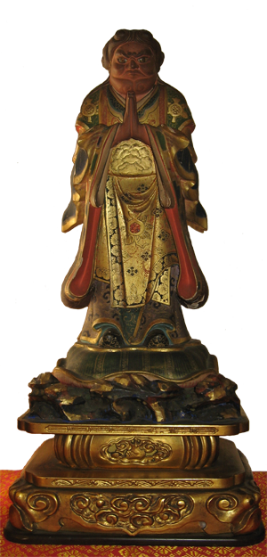

"the raksasis said to the Buddha: World Honored One! We also will protect the person who keeps, reads and recites this sutra, and acts according to it so that he may be peaceful, that he may have no trouble, and that poison taken by him may be neutralized."
Lotus Sutra Chapter 26
Kishimo-jin
This statue is inherited from Rev. Kaisen Kanai who received it from an elderly nun shortly after World War II. It is said that the statue has powerful energy to save suffering people.